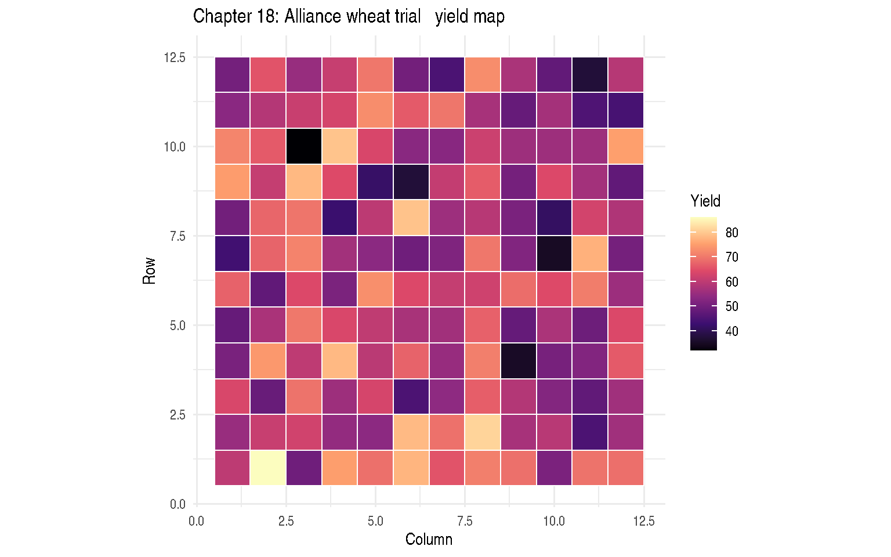
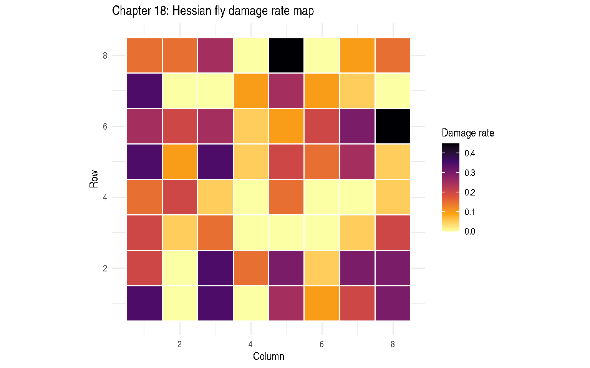

Chapter 18: Correlated Errors, Part II: Spatial Variability
Spatial Covariance Models for Gaussian and Non-Gaussian Responses
2026-05-17
Source:vignettes/chapter-18-correlated-errors.qmd
1 Overview
Chapter 18 addresses spatial variability where residual errors are correlated as a function of distance between plots on a field.
1.1 Spatial Covariance Functions
The spherical model (SP(SPH)): \[C(d) = \sigma^2 \left[1 - \frac{3d}{2r} + \frac{d^3}{2r^3}\right] \mathbf{1}(d \le r)\]
The exponential model: \[C(d) = \sigma^2 \exp\left(-\frac{d}{\phi}\right)\]
where \(r\) or \(\phi\) is the range parameter and \(\sigma^2\) is the sill.
2 Example 18.1 — Alliance Wheat Trial: Gaussian Spatial (Section 18.3)
DataSet18.1: 12×12 field grid, 48 wheat variety treatments, 3 complete column blocks (columns 1–4, 5–8, 9–12). 144 plots total.
'data.frame': 144 obs. of 5 variables:
$ row : int 1 1 1 1 1 1 1 1 1 1 ...
$ col : int 1 2 3 4 5 6 7 8 9 10 ...
$ block: Factor w/ 3 levels "1","2","3": 1 1 1 1 2 2 2 2 3 3 ...
$ trt : Factor w/ 48 levels "1","2","3","4",..: 2 42 24 38 6 33 40 18 4 34 ...
$ y : num 60.1 86.2 49.6 75.2 69.2 ...block
1 2 3
48 48 48 Code
ggplot(DataSet18.1, aes(x = col, y = row, fill = y)) +
geom_tile(colour = "white", linewidth = 0.3) +
scale_fill_viridis_c(option = "magma") +
labs(title = "Chapter 18: Alliance wheat trial — yield map",
x = "Column", y = "Row", fill = "Yield") +
coord_equal() +
theme_minimal()
2.1 Baseline: complete block model (no spatial covariance)
2.2 Spatial models via nlme::gls
Code
## Spherical covariance (SP(SPH) — best model in book)
fit_sph <- nlme::gls(
model = y ~ trt + block,
correlation = nlme::corSpher(form = ~ row + col, nugget = FALSE),
data = DataSet18.1,
method = "REML"
)
## Exponential covariance
fit_exp <- nlme::gls(
model = y ~ trt + block,
correlation = nlme::corExp(form = ~ row + col, nugget = FALSE),
data = DataSet18.1,
method = "REML"
)
## AICC comparison (smallest = best)
stats::AIC(fit_sph, fit_exp)| df | AIC | |
|---|---|---|
| fit_sph | 52 | 683.0447 |
| fit_exp | 52 | 683.0447 |
2.3 Spatial range and sill from best model
Code
tryCatch(
nlme::intervals(fit_sph, which = "var-cov"),
error = function(e) {
cat("Intervals not available (non-PD Hessian on reconstructed data):",
conditionMessage(e), "\n")
cat("Range estimate (corSpher range parameter):\n")
print(stats::coef(fit_sph$modelStruct$corStruct, unconstrained = FALSE))
}
)Intervals not available (non-PD Hessian on reconstructed data): cannot get confidence intervals on var-cov components: Non-positive definite approximate variance-covariance
Range estimate (corSpher range parameter):
range
1.000041 2.4 Empirical variogram
3 Example 18.2 — Hessian Fly Trial: Binomial Spatial (Section 18.4)
DataSet18.2: 16 wheat varieties in a 4×4 lattice design (4 complete blocks), 64 plots. Response is number of Hessian fly-damaged plants out of total (y / n).
'data.frame': 64 obs. of 6 variables:
$ block : Factor w/ 4 levels "1","2","3","4": 1 1 2 2 3 3 4 4 1 1 ...
$ variety: Factor w/ 16 levels "1","2","3","4",..: 1 9 1 3 1 3 1 3 2 10 ...
$ row : int 1 1 1 1 1 1 1 1 2 2 ...
$ col : int 1 2 3 4 5 6 7 8 1 2 ...
$ y : int 7 0 7 0 5 2 4 6 4 0 ...
$ n : int 20 20 20 20 20 20 20 20 20 20 ... 1 2 3 4 5 6 7 8 9 10 11
0.2875 0.2500 0.1500 0.1000 0.3000 0.3125 0.2250 0.1375 0.0500 0.0375 0.0125
12 13 14 15 16
0.1875 0.1875 0.1250 0.0000 0.1000 Code
ggplot(DataSet18.2, aes(x = col, y = row, fill = y / n)) +
geom_tile(colour = "white", linewidth = 0.5) +
scale_fill_viridis_c(option = "inferno", direction = -1) +
labs(title = "Chapter 18: Hessian fly damage rate map",
x = "Column", y = "Row", fill = "Damage rate") +
coord_equal() +
theme_minimal()
3.1 RCB model (baseline)
Code
fit_rcb18 <- lme4::glmer(
cbind(y, n - y) ~ variety + (1 | block),
family = stats::binomial(link = "logit"),
data = DataSet18.2,
control = lme4::glmerControl(optimizer = "bobyqa")
)
summary(fit_rcb18)Generalized linear mixed model fit by maximum likelihood (Laplace
Approximation) [glmerMod]
Family: binomial ( logit )
Formula: cbind(y, n - y) ~ variety + (1 | block)
Data: DataSet18.2
Control: lme4::glmerControl(optimizer = "bobyqa")
AIC BIC logLik -2*log(L) df.resid
251.0 287.7 -108.5 217.0 47
Scaled residuals:
Min 1Q Median 3Q Max
-1.87867 -0.81856 -0.00014 0.72343 3.00768
Random effects:
Groups Name Variance Std.Dev.
block (Intercept) 0 0
Number of obs: 64, groups: block, 4
Fixed effects:
Estimate Std. Error z value Pr(>|z|)
(Intercept) -0.90756 0.24703 -3.674 0.000239 ***
variety2 -0.19106 0.35734 -0.535 0.592881
variety3 -0.82704 0.39882 -2.074 0.038107 *
variety4 -1.28967 0.44711 -2.884 0.003921 **
variety5 0.06026 0.34720 0.174 0.862212
variety6 0.11910 0.34526 0.345 0.730126
variety7 -0.32921 0.36429 -0.904 0.366158
variety8 -0.92865 0.40795 -2.276 0.022823 *
variety9 -2.03688 0.56937 -3.577 0.000347 ***
variety10 -2.33764 0.63823 -3.663 0.000250 ***
variety11 -3.46189 1.03619 -3.341 0.000835 ***
variety12 -0.55878 0.37825 -1.477 0.139602
variety13 -0.55878 0.37825 -1.477 0.139602
variety14 -1.03835 0.41870 -2.480 0.013140 *
variety15 -19.83000 3560.88102 -0.006 0.995557
variety16 -1.28967 0.44711 -2.884 0.003921 **
---
Signif. codes: 0 '***' 0.001 '**' 0.01 '*' 0.05 '.' 0.1 ' ' 1optimizer (bobyqa) convergence code: 0 (OK)
boundary (singular) fit: see help('isSingular')3.2 G-side spherical spatial GLMM via glmmTMB
Code
if (requireNamespace("glmmTMB", quietly = TRUE)) {
DataSet18.2$pos <- glmmTMB::numFactor(DataSet18.2$row, DataSet18.2$col)
fit_sp18 <- glmmTMB::glmmTMB(
cbind(y, n - y) ~ variety + (1 | block) +
exp(pos + 0 | block),
family = stats::binomial(link = "logit"),
data = DataSet18.2
)
summary(fit_sp18)
emm_sp18 <- emmeans::emmeans(fit_sp18, ~ variety, type = "response")
print(emm_sp18)
} variety prob SE df asymp.LCL asymp.UCL
1 0.2865 NaN Inf NaN NaN
2 0.2489 NaN Inf NaN NaN
3 0.1488 NaN Inf NaN NaN
4 0.0991 NaN Inf NaN NaN
5 0.2990 NaN Inf NaN NaN
6 0.3115 NaN Inf NaN NaN
7 0.2238 NaN Inf NaN NaN
8 0.1364 NaN Inf NaN NaN
9 0.0495 NaN Inf NaN NaN
10 0.0371 NaN Inf NaN NaN
11 0.0124 NaN Inf NaN NaN
12 0.1864 NaN Inf NaN NaN
13 0.1862 NaN Inf NaN NaN
14 0.1239 NaN Inf NaN NaN
15 0.0000 NaN Inf NaN NaN
16 0.0991 NaN Inf NaN NaN
Confidence level used: 0.95
Intervals are back-transformed from the logit scale 4 Key Takeaways
- Ignoring spatial correlation leads to underestimated standard errors and inflated Type I error for treatment comparisons.
-
nlme::gls()provides spherical, exponential, and Gaussian spatial covariance for Gaussian responses; select the best model by AICC. - For non-Gaussian spatial GLMMs (e.g., binomial), use
glmmTMBwith spatial random effects. - The variogram is the primary diagnostic for spatial dependence.
5 References
Stroup, W. W., Ptukhina, M., and Garai, S. (2024). Generalized Linear Mixed Models: Modern Concepts, Methods and Applications (2nd ed.). CRC Press.
Pinheiro, J., & Bates, D. (2000). Mixed-Effects Models in S and S-PLUS. Springer.